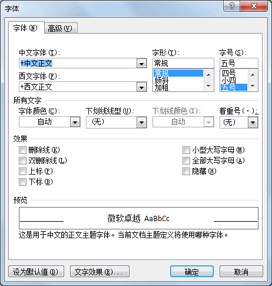
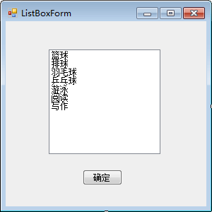
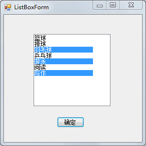
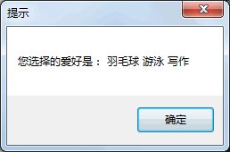
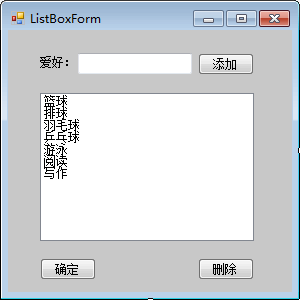
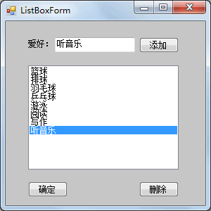

首页 > 编程笔记
C# ListBox：列表框控件
列表框 (ListBox) 将所提供的内容以列表的形式显示出来，并可以选择其中的一项或多项内容，从形式上比使用复选框更好一些。
例如，在 Word 中设置字体时界面如下图所示。
在列表框控件中有一些属性与前面介绍的控件不同，如下表所示。
列表框还提供了一些方法来操作列表框中的选项，由于列表框中的选项是一个集合形式的，列表项的操作都是用 Items 属性进行的。
例如
【实例 1】使用列表框的形式完成《C# CheckBox》一节中爱好的选择。
根据题目要求，使用列表框列出所需的爱好，将窗体命名为 ListBoxForm，界面设计如下图所示。
单击“确定”按钮后弹出消息框显示被选中的项目，效果如下图所示。
【实例 2】在实例 1 的基础上添加两个按钮，一个负责向列表框中添加爱好，一个负责删除选中的列表项。
根据题目要求，ListBoxForm 窗体的设计效果如下图所示。
实现的代码如下。
向列表框中添加选项的效果如下图所示。
当选中列表框中的值并单击“删除”按钮后，列表中的相应选项即可被删除。
例如，在 Word 中设置字体时界面如下图所示。

在列表框控件中有一些属性与前面介绍的控件不同，如下表所示。
| 属性名 | 作用 |
|---|---|
| MultiColumn | 获取或设置列表框是否支持多列，如果设置为 True，则表示支持多列； 如果设置为 False，则表示不支持多列，默认为 False |
| Items | 获取或设置列表框控件中的值 |
| SelectedItems | 获取列表框中所有选中项的集合 |
| SelectedItem | 获取列表框中当前选中的项 |
| SelectedIndex | 获取列表框中当前选中项的索引，索引从 0 开始 |
| SelectionMode | 获取或设置列表框中选择的模式，当值为 One 时，代表只能选中一项， 当值为 MultiSimple 时，代表能选择多项，当值为 None 时，代表不能选 择，当值为 MultiExtended 时，代表能选择多项，但要在按下 Shift 键后 再选择列表框中的项 |
列表框还提供了一些方法来操作列表框中的选项，由于列表框中的选项是一个集合形式的，列表项的操作都是用 Items 属性进行的。
例如
Items.Add 方法用于向列表框中添加项，Items.Insert 方法用于向列表框中的指定位置添加项，Items.Remove 方法用于移除列表框中的项。【实例 1】使用列表框的形式完成《C# CheckBox》一节中爱好的选择。
根据题目要求，使用列表框列出所需的爱好，将窗体命名为 ListBoxForm，界面设计如下图所示。

单击“确定”按钮以消息框弹出所选的爱好，实现的代码如下。提示：ListBox实现多选需要设置窗体的 SelectionMode 属性为 MultiSimple。
public partial class ListBoxForm : Form
{
public ListBoxForm()
{
InitializeComponent();
}
//单击“确定”按钮事件
private void button1_Click(object sender, EventArgs e)
{
string msg = "";
for(int i = 0; i < listBox1.SelectedItems.Count; i++)
{
msg = msg + " " + listBox1.SelectedItems[i].ToString();
}
if (msg != "")
{
MessageBox.Show("您选择的爱好是：" + msg, "提示");
}
else
{
MessageBox.Show("您没有选择爱好", "提示");
}
}
}
运行 ListBoxForm 窗体，效果如下图所示。

单击“确定”按钮后弹出消息框显示被选中的项目，效果如下图所示。

【实例 2】在实例 1 的基础上添加两个按钮，一个负责向列表框中添加爱好，一个负责删除选中的列表项。
根据题目要求，ListBoxForm 窗体的设计效果如下图所示。

实现的代码如下。
//将列表框中的选中项删除
private void button2_Click(object sender, EventArgs e)
{
//由于列表框控件中允许多选所以需要循环删除所有已选项
int count = listBox1.SelectedItems.Count;
List<string> itemValues = new List<string>();
if (count != 0)
{
for(int i = 0; i < count; i++)
{
itemValues.Add(listBox1.SelectedItems[i].ToString());
}
foreach(string item in itemValues)
{
listBox1.Items.Remove(item);
}
}
else
{
MessageBox.Show("请选择需要删除的爱好！");
}
}
//将文本框中的值添加到列表框中
private void button3_Click(object sender, EventArgs e)
{
//当文本框中的值不为空时将其添加到列表框中
if (textBox1.Text != "")
{
listBox1.Items.Add(textBox1.Text);
}
else
{
MessageBox.Show("请添加爱好！");
}
}
在编写删除操作的功能时需要注意，首先要将列表框中的选中项存放到一个集合中, 然后再对该集合中的元素依次使用 Remove 方法移除。向列表框中添加选项的效果如下图所示。

当选中列表框中的值并单击“删除”按钮后，列表中的相应选项即可被删除。
关注公众号「站长严长生」，在手机上阅读所有教程，随时随地都能学习。内含一款搜索神器，免费下载全网书籍和视频。

微信扫码关注公众号